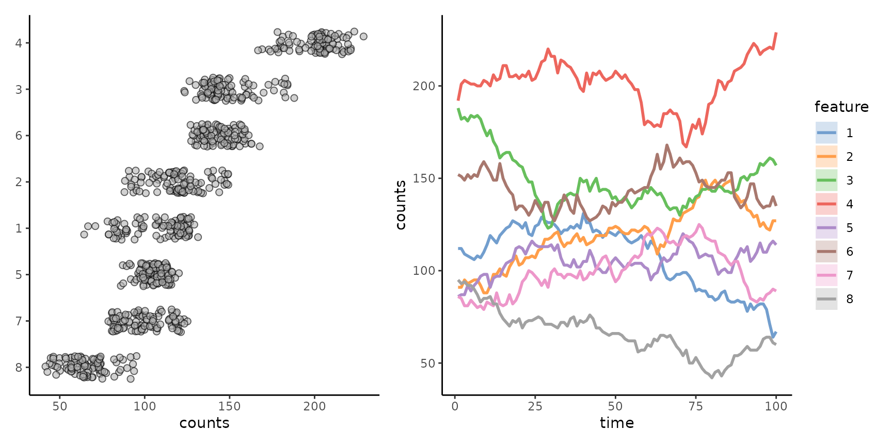

miaSim: Microbiome Data Simulation
Yagmur Simsek
yagmur.simsek@hsrw.orgYu Gao
gaoyu19920914@gmail.comEmma Gheysen
emma.gheysen@student.kuleuven.beDaniel Rios Garza
danielrios.garza@kuleuven.beKaroline Faust
karoline.faust@kuleuven.beLeo Lahti
leo.lahti@iki.fi2023-05-29
Source:vignettes/miaSim.Rmd
miaSim.RmdIntroduction
miaSim implements tools for microbiome data simulation based on varying ecological modeling assumptions. These can be used to simulate species abundance matrices, including time series. Detailed function documentation is available at the function reference
The miaSim package supports the R/Bioconductor framework based on the TreeSummarizedExperiment data container. For more information on operating with this data format in microbial ecology, see the online tutorial.
Install the Bioconductor release version with
if (!requireNamespace("BiocManager", quietly = TRUE))
install.packages("BiocManager")Load the library
Examples
Generating species interaction matrices
Some of the models rely on interaction matrices that represents interaction heterogeneity between species. The interaction matrix can be generated with different distributional assumptions.
Generate interactions from normal distribution:
A_normal <- powerlawA(n_species = 4, alpha = 3)Generate interactions from uniform distribution:
Ricker model
Ricker model is a discrete version of the gLV:
rickermodel <- simulateRicker(n_species=4, A = A_normal, t_end=100, norm = FALSE)The number of species specified in the interaction matrix must be the same as the species used in the models.
Hubbell model
Hubbell Neutral simulation model characterizes diversity and relative abundance of species in ecological communities assuming migration, births and deaths but no interactions. Losses become replaced by migration or birth.
tse_hubbell <- simulateHubbell(n_species = 8, M = 10, carrying_capacity = 1000,
k_events = 50, migration_p = 0.02, t_end = 100)One can also simulate parameters for the Hubbell model.
params_hubbell <- simulateHubbellRates(x0 = c(0,5,10),
migration_p = 0.1, metacommunity_probability = NULL, k_events = 1,
growth_rates = NULL, norm = FALSE, t_end=1000)Self-Organised Instability (SOI)
The Self-Organised Instability (SOI) model generates time series for communities and accelerates stochastic simulation.
tse_soi <- simulateSOI(n_species = 4, carrying_capacity = 1000,
A = A_normal, k_events=5,
x0 = NULL,t_end = 150, norm = TRUE)Stochastic logistic model
Stochastic logistic model is used to determine dead and alive counts in community.
tse_logistic <- simulateStochasticLogistic(n_species = 5)Consumer-resource model
The consumer resource model requires the randomE function. This returns a matrix containing the production rates and consumption rates of each species. The resulting matrix is used as a determination of resource consumption efficiency.
# Consumer-resource model as a TreeSE object
tse_crm <- simulateConsumerResource(n_species = 2,n_resources = 4, E = randomE(n_species = 2, n_resources = 4))You could visualize the simulated dynamics using tools from the miaTime package.
Generalized Lotka-Volterra (gLV)
The generalized Lotka-Volterra simulation model generates time-series assuming microbial population dynamics and interaction.
tse_glv <- simulateGLV(n_species = 4, A = A_normal, t_start = 0,
t_store = 1000, stochastic = FALSE, norm = FALSE)Data containers
The simulated data sets are returned as TreeSummarizedExperiment objects. This provides access to a broad range of tools for microbiome analysis that support this format (see microbiome.github.io). More examples on the object manipulation and analysis can be found at OMA Online Manual.
For instance, to plot population density we can use the miaViz package:
library(miaViz)
p1 <- plotAbundanceDensity(tse_hubbell, assay.type = "counts")
p2 <- plotSeries(tse_hubbell, x = "time")
print(p1+p2)
Case studies
Source code for replicating the published case studies using the miaSim package (Gao et al. 2023) is available in the phyloseq folder (based on the phyloseq data container). Some of the original case studies have now been replicated also with TreeSummarized, see the TreeSummarizedExperiment folder.
Related work
- micodymora Python package for microbiome simulation
Session info
## R version 4.3.0 (2023-04-21)
## Platform: x86_64-pc-linux-gnu (64-bit)
## Running under: Ubuntu 22.04.2 LTS
##
## Matrix products: default
## BLAS: /home/xxx/bin/R-4.3.0/lib/libRblas.so
## LAPACK: /usr/lib/x86_64-linux-gnu/lapack/liblapack.so.3.10.0
##
## locale:
## [1] LC_CTYPE=en_US.UTF-8 LC_NUMERIC=C
## [3] LC_TIME=en_US.UTF-8 LC_COLLATE=en_US.UTF-8
## [5] LC_MONETARY=en_US.UTF-8 LC_MESSAGES=en_US.UTF-8
## [7] LC_PAPER=en_US.UTF-8 LC_NAME=C
## [9] LC_ADDRESS=C LC_TELEPHONE=C
## [11] LC_MEASUREMENT=en_US.UTF-8 LC_IDENTIFICATION=C
##
## time zone: Europe/Mariehamn
## tzcode source: system (glibc)
##
## attached base packages:
## [1] stats4 stats graphics grDevices utils datasets methods
## [8] base
##
## other attached packages:
## [1] miaViz_1.9.1 ggraph_2.1.0
## [3] ggplot2_3.4.2 mia_1.9.2
## [5] MultiAssayExperiment_1.26.0 miaSim_1.7.1
## [7] TreeSummarizedExperiment_2.8.0 Biostrings_2.68.1
## [9] XVector_0.40.0 SingleCellExperiment_1.22.0
## [11] SummarizedExperiment_1.30.1 Biobase_2.60.0
## [13] GenomicRanges_1.52.0 GenomeInfoDb_1.36.0
## [15] IRanges_2.34.0 S4Vectors_0.38.1
## [17] BiocGenerics_0.46.0 MatrixGenerics_1.12.0
## [19] matrixStats_0.63.0 BiocStyle_2.28.0
##
## loaded via a namespace (and not attached):
## [1] jsonlite_1.8.4 magrittr_2.0.3
## [3] ggbeeswarm_0.7.2 farver_2.1.1
## [5] rmarkdown_2.21.3 fs_1.6.2
## [7] zlibbioc_1.46.0 ragg_1.2.5
## [9] vctrs_0.6.2 memoise_2.0.1
## [11] DelayedMatrixStats_1.22.0 RCurl_1.98-1.12
## [13] ggtree_3.8.0 htmltools_0.5.5
## [15] S4Arrays_1.0.4 BiocNeighbors_1.18.0
## [17] deSolve_1.35 gridGraphics_0.5-1
## [19] sass_0.4.6 pracma_2.4.2
## [21] bslib_0.4.2 desc_1.4.2
## [23] plyr_1.8.8 DECIPHER_2.28.0
## [25] cachem_1.0.8 igraph_1.4.3
## [27] lifecycle_1.0.3 pkgconfig_2.0.3
## [29] rsvd_1.0.5 Matrix_1.5-4.1
## [31] R6_2.5.1 fastmap_1.1.1
## [33] GenomeInfoDbData_1.2.10 aplot_0.1.10
## [35] digest_0.6.31 ggnewscale_0.4.9
## [37] colorspace_2.1-0 patchwork_1.1.2.9000
## [39] rprojroot_2.0.3 scater_1.28.0
## [41] irlba_2.3.5.1 textshaping_0.3.6
## [43] RSQLite_2.3.1 vegan_2.6-4
## [45] beachmat_2.16.0 labeling_0.4.2
## [47] fansi_1.0.4 polyclip_1.10-4
## [49] mgcv_1.8-42 compiler_4.3.0
## [51] bit64_4.0.5 withr_2.5.0
## [53] BiocParallel_1.34.2 viridis_0.6.3
## [55] DBI_1.1.3 highr_0.10
## [57] ggforce_0.4.1 MASS_7.3-60
## [59] poweRlaw_0.70.6 DelayedArray_0.26.3
## [61] permute_0.9-7 miaTime_0.1.21
## [63] tools_4.3.0 vipor_0.4.5
## [65] beeswarm_0.4.0 ape_5.7-1
## [67] glue_1.6.2 nlme_3.1-162
## [69] grid_4.3.0 cluster_2.1.4
## [71] reshape2_1.4.4 generics_0.1.3
## [73] gtable_0.3.3 tidyr_1.3.0
## [75] BiocSingular_1.16.0 tidygraph_1.2.3
## [77] ScaledMatrix_1.8.1 utf8_1.2.3
## [79] ggrepel_0.9.3 pillar_1.9.0
## [81] stringr_1.5.0 yulab.utils_0.0.6
## [83] splines_4.3.0 dplyr_1.1.2
## [85] tweenr_2.0.2 treeio_1.24.0
## [87] lattice_0.21-8 bit_4.0.5
## [89] tidyselect_1.2.0 DirichletMultinomial_1.42.0
## [91] scuttle_1.10.1 knitr_1.43
## [93] gridExtra_2.3 bookdown_0.34
## [95] xfun_0.39 graphlayouts_1.0.0
## [97] stringi_1.7.12 ggfun_0.0.9
## [99] lazyeval_0.2.2 yaml_2.3.7
## [101] evaluate_0.21 codetools_0.2-19
## [103] tibble_3.2.1 BiocManager_1.30.20
## [105] ggplotify_0.1.0 cli_3.6.1.9000
## [107] systemfonts_1.0.4 munsell_0.5.0
## [109] jquerylib_0.1.4 Rcpp_1.0.10
## [111] parallel_4.3.0 pkgdown_2.0.7
## [113] blob_1.2.4 sparseMatrixStats_1.12.0
## [115] bitops_1.0-7 decontam_1.20.0
## [117] viridisLite_0.4.2 tidytree_0.4.2
## [119] scales_1.2.1 purrr_1.0.1
## [121] crayon_1.5.2 rlang_1.1.1